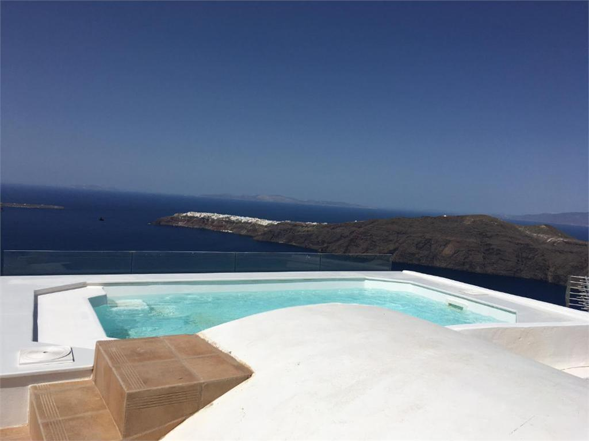

Plastikiniai šilti langai namui – Plastikiniai langai Vilniuje Kainos
2020.10.27 11:56
Skip links
Skip to primary navigation Skip to content8-659-51010
info@neolangai.lt
info@neolangai.lt
Gauti pasiūlymą Toggle navigation Produktai Plastikiniai šilti langai butui Plastikiniai šilti langai namui Šiltos plastikinės durys Lauko-įėjimo durys Terasų ir balkonų stiklinimas Aliuminio langai ir durys Garažo vartai Langų ir durų priedai Kodėl mes Paslaugos Patarimai Kodėl rasoja langai? Šilumos taupymas Kaip išsirinkti gerus, šiltus langus Dažnos klaidos renkantis langus Kontaktai 8-659-51010 info@neolangai.ltPlastikiniai šilti langai namui
Kommerling 88 MD
A+/A++ klasė
7 kameros 88mm storis
Rėmo Uf=0.95 W / m²K
3 tarpinės
Gauti pasiūlymą
PREMIUM KLASĖ
Plastikinis šiltas langas iš KO MMERLING 88 MD profilio A++ klasė
Naujos kartos PREMIUM klasės vokiška plastikinių langų sistema. Sukurta patenkinti reikliausių klientų norus. Ypatinga kokybė ir ilgaamžiškumas, tvirtumas, puikus dizainas bei išskirtinė šiluminė izoliacija, atitinkančia ne tik pasyvaus namo, bet ir A++ langų energinio naudingumo klasę.
Šilumos laidumo koeficientas iki Uw=0.77-0.81 W/m2K. (naudojant termo rėmelį) Gaminamas iš vokiško 7 kamerų, 3 sandarinimo tarpinių, 88 mm pločio Kommerling 88MD plastikinio profilio . Naudojamas 3 stiklų naujos kartos selektyvinis 48 mm šilumą taupantis stiklo paketas su termo rėmeliais. Ypač šiltas naujos kartos A+/A++ energinio naudingumo klasės langas, kuris stipriai sumažina šilumos išlaidas ir atitinka pasyvaus namo reikalavimus. Papildoma 3-čia sandarinimo tarpinė užtikrina ypatingai gerą šilumos ir garso izoliaciją. Gera garso izoliacija apsaugo nuo triukšmo ir užtikrina ramybę namuose. Saugus ir patikimas langas, apsaugantis nuo įsilaužimo dėka naudojamų „Winkhaus activPilot Concept“ apkaustų. Draugiškas gamtai langas pagamintas nenaudojant švino. Naudojami austriški Maco apkaustai.Rekomenduojame kaip aukščiausios kokybės gaminį.
KÖMMERLING 76 MD
A+ klasė
Rėmo Uf=1 W / m²K
6 kameros 3 tarpinės
76mm profilio storis
Gauti pasiūlymą
Plastikinis šiltas langas iš KÖMMERLING 76 MD profilio A+klasė
Šilumos laidumo koeficientas iki Uw=0.85-0.91 W/m2K. (naudojant termo rėmelį) Gaminamas iš vokiško 6 kamerų, 3 sandarinimo tarpinių, 76 mm pločio KÖMMERLING 76 MD plastikinio profilio . Naudojamas 3 stiklų naujos kartos selektyvinis 48 mm šilumą taupantis stiklo paketas su termo rėmeliais. Ypač šiltas naujos kartos A+ energinio naudingumo klasės langas, kuris stipriai sumažina šilumos išlaidas ir atitinka pasyvaus namo reikalavimus. Papildoma 3-čia sandarinimo tarpinė užtikrina ypatingai gerą šilumos ir garso izoliaciją. Gera garso izoliacija apsaugo nuo triukšmo ir užtikrina ramybę namuose. Saugus ir patikimas langas, apsaugantis nuo įsilaužimo dėka naudojamų „Winkhaus activPilot Concept“ apkaustų. Draugiškas gamtai langas pagamintas nenaudojant švino. Naudojami austriški Maco apkaustai.
KÖMMERLING 70
A/B klasė
Rėmo Uf=1,20 W / m²K
5 kameros
70mm profilio storis
Gauti pasiūlymą
Plastikinis šiltas langas iš KÖMMERLING 70 profilio A/B klasė
Šilumos laidumo koeficientas iki Uw=1,0-1,1 W/m2K. (naudojant termo rėmelį) Gaminamas iš vokiško 5 kamerų, 70 mm pločio KÖMMERLING 70 plastikinio profilio . Naudojant 3 stiklų naujos kartos selektyvinis šilumą taupantį stiklo paketą su termo rėmeliu pasiekiama A klasė. Gera garso izoliacija apsaugo nuo triukšmo ir užtikrina ramybę namuose. Saugus ir patikimas langas, apsaugantis nuo įsilaužimo dėka naudojamų „Winkhaus activPilot Concept“ apkaustų. Draugiškas gamtai langas pagamintas nenaudojant švino. Naudojami austriški Maco apkaustai.Tinkamas pasirinkimas taupant pinigus ir kai nėra poreikio A+ ar A++ klasei.
Gealan S 9000
A+/A++ klasė
Uf=0.92 W / m²K
Žiūrėti brošiūrą
Gauti pasiūlymą
Plastikinis šiltas langas iš GEALAN S 9000 profilio A++ klasė
Šilumos laidumo koeficientas iki Uw=0.77-0.81 W/m2K. (naudojant termo rėmelį) Gaminamas iš vokiško 6 kamerų, 3 sandarinimo tarpinių, 82.5 mm pločio GEALAN plastikinio profilio S9000. Naudojamas 3 stiklų naujos kartos selektyvinis 48 mm šilumą taupantis stiklo paketas su termo rėmeliais. Ypač šiltas naujos kartos A+/A++ energinio naudingumo klasės langas, kuris stipriai sumažina šilumos išlaidas ir atitinka pasyvaus namo reikalavimus. Papildoma 3-čia sandarinimo tarpinė užtikrina ypatingai gerą šilumos ir garso izoliaciją. Gera garso izoliacija apsaugo nuo triukšmo ir užtikrina ramybę namuose. Saugus ir patikimas langas, apsaugantis nuo įsilaužimo dėka naudojamų „Winkhaus activPilot Concept“ apkaustų. Draugiškas gamtai langas pagamintas nenaudojant švino. Galima rinktis lango spalvą REALWOOD paletė ir Laminatų paletė.Rekomenduojame kaip aukščiausios kokybės gaminį.
Gealan S 8000
A/B klasė
Uf=1,1 W / m²K
Žiūrėti brošiūrą
Gauti pasiūlymą
Plastikinis šiltas langas iš GEALAN S 8000 profilio A/B klasė
Šilumos laidumo koeficientas iki Uw=0,9-1,0 W/m2K. (naudojant termo rėmelį) Gaminamas iš vokiško 6 kamerų, 2 sandarinimo tarpinių, 74 mm pločio GEALAN plastikinio profilio S8000. Naudojamas 3 stiklų naujos kartos selektyvinis 40 mm šilumą taupantis stiklo paketas su/ be termo rėmelio. Šiltas naujos kartos A/B energinio naudingumo klasės langas, kuris stipriai sumažina šilumos išlaidas. 2 sandarinimo tarpinės užtikrina gerą šilumos ir garso izoliaciją. Gera garso izoliacija apsaugo nuo triukšmo ir užtikrina ramybę namuose. Saugus ir patikimas langas, apsaugantis nuo įsilaužimo dėka naudojamų „Winkhaus activPilot Concept“ apkaustų. Draugiškas gamtai langas pagamintas nenaudojant švino. Galima įmontuoti visų tipų orlaides. Galima rinktis lango spalvą medienos imitacija REALWOOD paletė ir Laminatų paletė. Veka Softline 82mm
A+/A++ klasė
Uf=1,0 W / m²K
Žiūrėti brošiūrą
Gauti pasiūlymą
Plastikinis šiltas langas iš VEKA Softline 82 profilio A+/A++ klasė
Šilumos laidumo koeficientas iki Uw=0.68 W/m2K. (naudojant termo rėmelį) Gaminamas iš vokiško 7 kamerų, 82 mm pločio Veka Softline plastikinio profilio. Naudojamas 3 stiklų naujos kartos selektyvinis iki 48 mm šilumą taupantis stiklo paketas su/be termo rėmelio. Ypač šiltas naujos kartos A+/A++ energinio naudingumo klasės langas, kuris stipriai sumažina šilumos išlaidas ir atitinka pasyvaus namo reikalavimus. Papildoma 3-čia sandarinimo tarpinė užtikrina ypatingai gerą šilumos ir garso izoliaciją. Gera garso izoliacija apsaugo nuo triukšmo ir užtikrina ramybę namuose. Saugus ir patikimas langas, apsaugantis nuo įsilaužimo dėka naudojamų „Winkhaus activPilot Concept“ apkaustų. Pritaikytas šiauriniam klimatui. Plati spalvų pasirinkimo galimybė Veka spalvų paletė. Draugiškas gamtai langas beveik 100% lango gali būti perdirbta.Šiltas, tvirtas, saugus, gražus puikus pasirinkimas. Rekomenduojam.
Veka Alphaline 90mm
A/A+ klasė
Uf=1,0W / m²K
Žiūrėti brošiūrą
Gauti pasiūlymą
Plastikinis šiltas langas iš VEKA Alphaline 90 profilio A/A+ klasė
Šilumos laidumo koeficientas iki Uw=0.80 W/m2K. (naudojant termo rėmelį) Gaminamas iš vokiško 6 kamerų, 90 mm pločio Veka Alphaline plastikinio profilio. Naudojamas 3 stiklų naujos kartos selektyvinis iki 48 mm šilumą taupantis stiklo paketas su/be termo rėmelio. Ypač šiltas naujos kartos A/A+ energinio naudingumo klasės langas, kuris stipriai sumažina šilumos išlaidas. Papildoma 3-čia sandarinimo tarpinė užtikrina ypatingai gerą šilumos ir garso izoliaciją. Gera garso izoliacija apsaugo nuo triukšmo ir užtikrina ramybę namuose. Saugus ir patikimas langas, apsaugantis nuo įsilaužimo dėka naudojamų „Winkhaus activPilot Concept“ apkaustų. Pritaikytas šiauriniam klimatui. Plati spalvų pasirinkimo galimybė Veka spalvų paletė. Draugiškas gamtai langas beveik 100% lango gali būti perdirbtaRekomenduojame siekiant ypač geros garso izoliacijos.
ALUPLAST IDEAL 8000
A /A+ klasė
Rėmo Uf=1.0W / m²K
6 kameros 3 tarpinės
85mm profilio storis
Gauti pasiūlymą
Plastikinis šiltas langas iš ALUPLAST IDEAL 8000 profilio A/A+ klasė
Šilumos laidumo koeficientas iki Uw=0,76 W/m2K. su termo rėmeliu. Gaminamas iš vokiško 6 kamerų, 85 mm pločio Aluplast Ideal 8000 plastikinio profilio. Naudojamas 3 stiklų naujos kartos selektyvinis iki 48 mm šilumą taupantis stiklo paketas su/be termo rėmelio. šiltas, kokybiškas laiko patikrintas langas. Klasikinė išvaizda už patrauklią kainą. 3 sandarinimo tarpinės užtikrina šilumos ir garso izoliaciją. Gera garso izoliacija apsaugo nuo triukšmo ir užtikrina ramybę namuose. Saugus ir patikimas langas, apsaugantis nuo įsilaužimo dėka naudojamų „Winkhaus activPilot Concept“ apkaustų. Galima rinktis įvairias lango rėmo spalvas. Aluplast spalvų paletė.Puikus pasirinkimas namui ar kaimo sodybai. Puiki kaina už gerą kokybę.
ALUPLAST IDEAL 4000
B /C klasė
Uf=1,3W / m²K
Gauti pasiūlymą
Plastikinis šiltas langas iš ALUPLAST IDEAL 4000 profilio B/C klasė
Šilumos laidumo koeficientas Uw=1,0-1,2 W/m2K. Gaminamas iš vokiško 5 kamerų, 70 mm pločio Aluplast Ideal 4000 plastikinio profilio. Naudojamas 2 arba 3 stiklų naujos kartos selektyvinis iki 43 mm šilumą taupantis stiklo paketas su/be termo rėmelio. šiltas, kokybiškas laiko patikrintas langas. Klasikinė išvaizda už patrauklią kainą. 2 sandarinimo tarpinės užtikrina šilumos ir garso izoliaciją. Gera garso izoliacija apsaugo nuo triukšmo ir užtikrina ramybę namuose. Saugus ir patikimas langas, apsaugantis nuo įsilaužimo dėka naudojamų „Winkhaus activPilot Concept“ apkaustų. Galima rinktis įvairias lango rėmo spalvas. Aluplast spalvų paletė.Puikus pasirinkimas sodo nameliui ar kaimo sodybai. Puiki kaina už gerą kokybę.
Šis langas tinka senos statybos butui arba vidaus patalpoms.
Naudingi patarimai
Kodėl rasoja langai?
Author adminas 22 VasKaip taupyti šilumą ?
Author adminas 22 VasKaip išsirinkti gerus, šiltus langus
Author adminas 22 VasDažnos klaidos renkantis langus
Author adminas 22 Vas15 metų patirtis
Aukščiausia kokybė
Langų remontas
Serviso paslaugos
5 metų garantinė priežiūra
Kontaktai:
info@neolangai.lt
info@neolangai.lt
Paribio g. 12, Vilnius
+370-659-51010
2018 © NeoLangai.lt | Sprendimas: seopaslaugos.com
- Plastikiniai Langai Vilniuje | Kaune - Gera Kaina Internetu
- Knygu Langas
- Apie chorą | Choras Langas
- Langas į valdžią - LRT
- Langas PLASTIMET CLICK-ON MD - Milanga
- Langas į vaiko pasaulį - Knygos internetu www.mintis.eu
- IS langas - atverk, pažink, suprask! Informacija apie ...
- Langas sapne :: Sapnų reikšmės | Laimos sapnininkas
- langas - išsamiai DELFI.lt
- langas - Vikižodynas - Wiktionary
- Plastikiniai Langai Vilniuje | Kaune - Gera Kaina Internetu
Plastikinis šiltas langas iš KÖMMERLING 76 MD profilio – A+klasė. Šilumos laidumo koeficientas iki Uw=0.85-0.91 W/m2K.(naudojant termo rėmelį) Gaminamas iš vokiško 6 kamerų, 3 sandarinimo tarpinių, 76 mm pločio KÖMMERLING 76 MD plastikinio profilio .
- Knygu Langas
NOVATORIŠKAS LANGAS SU AUTORINE PVC LANGŲ PROFILIŲ SISTEMA IR MODULINE KONSTRUKCIJA RĖMAS 6 kamerų, 80 mm montavimo gylio profilis. PATOGU NAUDOTI dėl glotnaus bei atsparaus atmosferos veiksniams išorinio paviršiaus langus lengva valyti. Užapvalintas stiklajuostės kampas palengvina švaros palaikymą. DAUGIAU ŠVIESOS palyginus su kitais rinkoje esančiais...
- Apie chorą | Choras Langas
Nauju knygu elektronine parduotuve internete Knygu Langas. Ivairiausiu zanru knygos vaikams ir suaugusiems, grožinė literatūra, žodynai, dovanu knygos, enciklopedijos, pažintines.
- Langas į valdžią - LRT
Nieko nebijantys jaunieji Šiaulių medikai: bus karšta, bet mes viską atlaikysime medikams gelbsti grupės „The Roop“ šokis 1383
- Langas PLASTIMET CLICK-ON MD - Milanga
Mjanmų kalba: nurodykite žodžio langas vertimą(-us) (Mjanmų kalba), žr. Mongolų kalba: цонх (tsonh) Norvegų kalba: vindu Oksitanų kalba: fenèstra Nyderlandų kalba: raam , venster , ruit Šablonas:mhrv1 тӧрза (törza)
- Langas į vaiko pasaulį - Knygos internetu www.mintis.eu
“Langas” yra varstomas, lyg keičiant galimybių dvelksmą nuo “neįsivaizduojamo”, t.y. visiškai svetimo visuomenės dorovės principams, kurį visiškai atmeta “dabartinės politikos” etape, iki stadijos, kada jau plačiai diskutuojama, masinės sąmonės priimta ir įtvirtinta įstatymu.
- IS langas - atverk, pažink, suprask! Informacija apie ...
Langas - Uždarytas - drąsa pasieksi tikslą; iškristi pro jį - pavojus; Matyti sapne stogo langą - pasisekimas. Matyti nešvarius langus - sapnuojančio žmogaus gyvenimo būdo pavyzdys. Jei jie apšviesti saulės - sąžinės graužimas. Jeigu sapnuojate, kad langą liečiate pirštais, vadinasi, Jus kankins abejonės dėl mylimo žmogaus.
- Langas sapne :: Sapnų reikšmės | Laimos sapnininkas
Knygoje „Langas į vaiko pasaulį" pateikiama daug praktinių pavyzdžių, kaip galime pažvelgti į paslaptingą vaiko pasaulį, jį suprasti, padėti išgyventi krizes, įveikti sunkumus, paskatinti augimą. Tam svarbu nuoširdžiai domėtis vaiku, priimti jį tokį, koks yra, būti greta.
- langas - išsamiai DELFI.lt
sm. (3) 1. SD222, R, LsB168 rėmai su stiklais, įtaisyti namo, susisiekimo priemonės ir kt. sienose šviesai įeiti; anga rėmams, patys rėmai ir stiklai rėmuose: Saulės atšvitulys į langą tviska J. Trobos langai užburbėję, užšalę, net baltuoja iš…
- langas - Vikižodynas - Wiktionary
Chorą "Langas" 1990 metais subūrė vadovė Rita Kraucevičiūtė. Iki 1995 metų kolektyvas priklausė įvairioms meninėms struktūroms: Šiuolaikinio meno centrui, galerijai "Langas", Lietuvos dailininkų sąjungai. 1995 metais choras "Langas" buvo pakviestas į naujai pašventintą šv. Pranciškaus Asyžiečio ir šv.
Plastikinis šiltas langas iš KÖMMERLING 76 MD profilio – A+klasė. Šilumos laidumo koeficientas iki Uw=0.85-0.91 W/m2K.(naudojant termo rėmelį) Gaminamas iš vokiško 6 kamerų, 3 sandarinimo tarpinių, 76 mm pločio KÖMMERLING 76 MD plastikinio profilio .
NOVATORIŠKAS LANGAS SU AUTORINE PVC LANGŲ PROFILIŲ SISTEMA IR MODULINE KONSTRUKCIJA RĖMAS 6 kamerų, 80 mm montavimo gylio profilis. PATOGU NAUDOTI dėl glotnaus bei atsparaus atmosferos veiksniams išorinio paviršiaus langus lengva valyti. Užapvalintas stiklajuostės kampas palengvina švaros palaikymą. DAUGIAU ŠVIESOS palyginus su kitais rinkoje esančiais...
Nauju knygu elektronine parduotuve internete Knygu Langas. Ivairiausiu zanru knygos vaikams ir suaugusiems, grožinė literatūra, žodynai, dovanu knygos, enciklopedijos, pažintines.
Nieko nebijantys jaunieji Šiaulių medikai: bus karšta, bet mes viską atlaikysime medikams gelbsti grupės „The Roop“ šokis 1383
Mjanmų kalba: nurodykite žodžio langas vertimą(-us) (Mjanmų kalba), žr. Mongolų kalba: цонх (tsonh) Norvegų kalba: vindu Oksitanų kalba: fenèstra Nyderlandų kalba: raam , venster , ruit Šablonas:mhrv1 тӧрза (törza)
“Langas” yra varstomas, lyg keičiant galimybių dvelksmą nuo “neįsivaizduojamo”, t.y. visiškai svetimo visuomenės dorovės principams, kurį visiškai atmeta “dabartinės politikos” etape, iki stadijos, kada jau plačiai diskutuojama, masinės sąmonės priimta ir įtvirtinta įstatymu.
Langas - Uždarytas - drąsa pasieksi tikslą; iškristi pro jį - pavojus; Matyti sapne stogo langą - pasisekimas. Matyti nešvarius langus - sapnuojančio žmogaus gyvenimo būdo pavyzdys. Jei jie apšviesti saulės - sąžinės graužimas. Jeigu sapnuojate, kad langą liečiate pirštais, vadinasi, Jus kankins abejonės dėl mylimo žmogaus.
Knygoje „Langas į vaiko pasaulį" pateikiama daug praktinių pavyzdžių, kaip galime pažvelgti į paslaptingą vaiko pasaulį, jį suprasti, padėti išgyventi krizes, įveikti sunkumus, paskatinti augimą. Tam svarbu nuoširdžiai domėtis vaiku, priimti jį tokį, koks yra, būti greta.
sm. (3) 1. SD222, R, LsB168 rėmai su stiklais, įtaisyti namo, susisiekimo priemonės ir kt. sienose šviesai įeiti; anga rėmams, patys rėmai ir stiklai rėmuose: Saulės atšvitulys į langą tviska J. Trobos langai užburbėję, užšalę, net baltuoja iš…
Chorą "Langas" 1990 metais subūrė vadovė Rita Kraucevičiūtė. Iki 1995 metų kolektyvas priklausė įvairioms meninėms struktūroms: Šiuolaikinio meno centrui, galerijai "Langas", Lietuvos dailininkų sąjungai. 1995 metais choras "Langas" buvo pakviestas į naujai pašventintą šv. Pranciškaus Asyžiečio ir šv.
